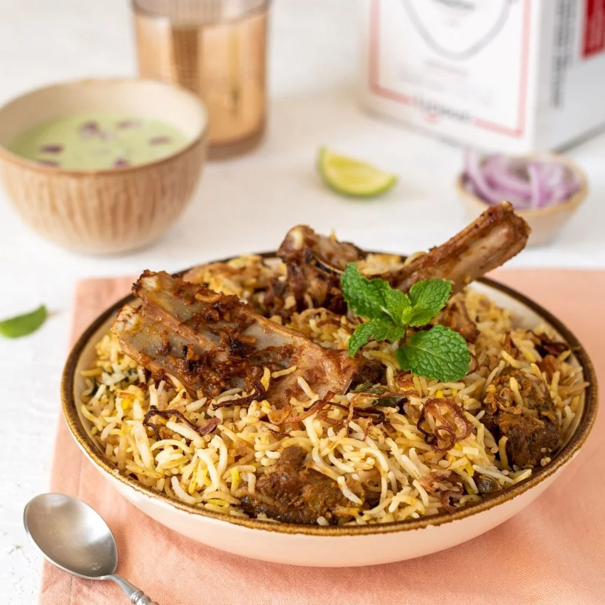
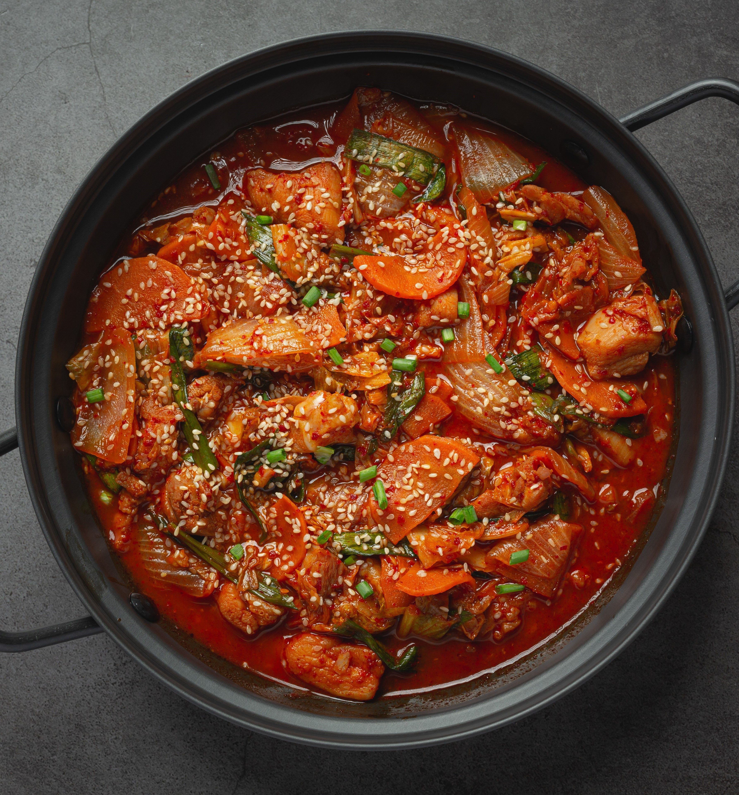

Our Products
-

Pizza
Pizza is an Italian dish consisting of a usually round, flattened base of leavened wheat-based dough topped with tomatoes, cheese, and often various other ingredients, which is then baked at a high temperature, traditionally in a wood-fired oven. A small pizza is sometimes called a pizzetta.
Price/1800
-

Chicken Biryani
Biryani is a mixed rice dish. It is made with Indian spices, rice, and meat usually that of chicken, fish, and sometimes, in addition, eggs or vegetables such as potatoes in certain regional varieties.
Price/350
-

Pasta
Pasta is a type of food typically made from an unleavened dough of wheat flour mixed with water or eggs, and formed into sheets or other shapes, then cooked by boiling or baking.
Price/200
-

Molten chocolate cake
Molten chocolate cake is a popular dessert that combines the elements of a chocolate cake and a soufflé. Its name derives from the dessert's liquid chocolate center, and it is also known as chocolate moelleux, chocolate lava cake, or simply lava cake.
Price/350
-

Mutton Biryani
Mutton biryani is a popular and delicious South Asian dish known for its aromatic flavors and tender pieces of mutton (goat meat) cooked with fragrant basmati rice and a blend of spices. It is a cherished part of Indian, Pakistani, and Bangladeshi cuisine and has numerous regional variations.
Price/400
-

Green Tea
Green tea is a popular and widely consumed type of tea that is made from the leaves of the Camellia sinensis plant. It is known for its many health benefits and distinct flavor profile.
Price/150
-

Chicken Kadai
This dish features tender chicken pieces cooked with a flavorful blend of spices, tomatoes, ginger, garlic, and bell peppers, all stir-fried in a special curved wok-like pan called a kadai. Chicken kadai is known for its rich, aromatic flavors and is a favorite in many Indian and Pakistani restaurants and households.
Price/2200
-
Be Part
Of Our
Cafe!